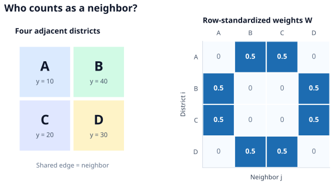
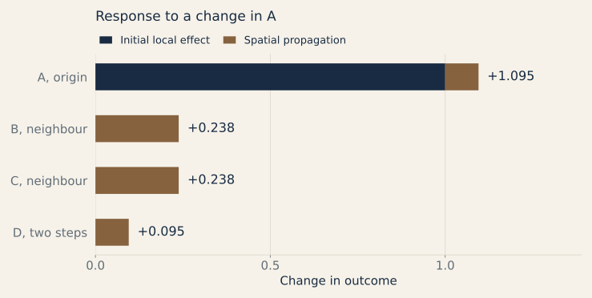

Spatial econometrics
Places are connected. Spatial models describe how an outcome in one place can depend on nearby outcomes, nearby characteristics, or shared spatial shocks.
Why location matters
Imagine studying house prices across districts. A price in one district may respond to prices in neighboring districts; nearby amenities may matter too. Unobserved local conditions can also make neighboring errors similar. A regression that treats all districts as unrelated can miss these patterns.
These mechanisms are different: outcome interaction links the dependent variables, covariate spillover links characteristics across places, and correlated shocks link the errors. SAR, SLX, and SEM model these three channels respectively; SDM combines the first two.
Define neighbors with $W$
A spatial weights matrix $W$ records which of the $n$ places influence which others. Its entry $w_{ij}$ is the weight from place $j$ to place $i$, usually with $w_{ii}=0$. Neighbors can be defined by a shared border, distance, or a substantive network. The choice is part of the model, so results should be checked against plausible alternatives.
Consider four districts in a two-by-two grid. If only districts sharing an edge count as neighbors, each district has two neighbors. Dividing each nonzero row weight by two gives the row-standardized matrix below. The spatial lag $Wy$ then averages neighboring outcomes:

Rows sum to one for places with neighbors. An isolated place has no neighbors and needs an explicit convention, often a zero row. Even though $w_{AA}=0$, the diagonal of $W^2$ need not be zero: a path can leave A for B and return to A.
SAR: outcomes feed back across places
The spatial autoregressive model (SAR) adds the neighboring outcome $Wy$ to a regression. Here $X$ contains each place's covariates, $\beta$ their coefficients, $u$ the disturbances, and $\rho$ the strength of outcome interaction:
The second expression makes the feedback visible. When the inverse exists and the expansion converges,
$I$ is the effect within the original district; $W$ transmits it to immediate neighbors; $W^2$ includes two-step routes, including a route back home. For a nonnegative row-standardized $W$, $|\rho|<1$ is a convenient sufficient condition for this expansion. It is not a universal requirement for every possible $W$.
Direct effects and spillovers
In SAR, a coefficient $\beta_k$ is not generally the full effect of increasing covariate $k$ in one district. For one-unit changes in $x_k$, the matrix of marginal effects is
The diagonal of $S_k$ measures each district's own response, including effects that leave and return. The off-diagonal entries measure spillovers to other districts. Average direct effect is $\operatorname{tr}(S_k)/n$; average total effect is $\boldsymbol{1}^{\mathsf T}S_k\boldsymbol{1}/n$; average indirect effect is their difference.

For this symmetric grid, the average direct, indirect, and total effects are approximately 1.095, 0.571, and 1.667. The extra 0.095 in A's response above $\beta_k=1$ comes from feedback through its neighbors.
Estimation: why $Wy$ is special
In SAR, $Wy$ contains neighbors' outcomes, and those outcomes respond to shocks elsewhere in the same connected system. Consequently $Wy$ is generally correlated with the disturbance $u$; ordinary least squares on the displayed SAR equation is generally inconsistent. Maximum likelihood is one route to estimation. Instrumental variables are another: $WX$ and $W^2X$ can be candidate instruments if $X$ and the chosen $W$ are exogenous, and the instruments are relevant and sufficiently strong.
A distance-based $W$ can be more defensible than a network built from the outcome being explained, but geographical weights are not automatically exogenous. Examine how the definition of neighbors, row standardization, isolated places, and alternative specifications affect the result.
Other ways to model spatial dependence
The position of $W$ in an equation tells you which mechanism is being modeled. $\varepsilon$ below denotes an innovation before any spatial error propagation.
| Model | Equation | Where dependence enters |
|---|---|---|
| SAR | $y=\rho Wy+X\beta+u$ | Neighbors' outcomes |
| SEM | $y=X\beta+u$, $u=\lambda Wu+\varepsilon$ | Unobserved shocks |
| SLX | $y=X\beta+WX\theta+u$ | Neighbors' characteristics |
| SDM | $y=\rho Wy+X\beta+WX\theta+u$ | Outcomes and characteristics |
SEM (spatial error model) allows nearby places to share unobserved disturbances. With exogenous $X$, OLS coefficients in $y=X\beta+u$ can remain consistent, but ordinary OLS standard errors ignore the spatial error correlation and OLS is generally inefficient. Spatial-error ML or GMM estimation addresses that structure.
SLX (spatially lagged X) puts the neighboring covariates $WX$ directly into the regression. With exogenous $X$ and $W$, OLS can estimate $\beta$ and $\theta$: a change in district A's characteristic has a local effect through $X\beta$ and a spillover through $WX\theta$, without outcome feedback.
SDM (spatial Durbin model) combines $Wy$ and $WX$. Its effect matrix for covariate $k$ is $S_k=(I-\rho W)^{-1}(\beta_k I+\theta_k W)$, so both channels and their feedback enter direct and indirect effects. Setting $\theta=0$ yields SAR; setting $\rho=0$ yields SLX. Under the common-factor restriction $\theta=-\rho\beta$ and suitable assumptions, SDM also corresponds to an SEM representation. Adding $WX$ can help describe omitted spatial patterns, but it does not automatically remove endogeneity or identify causal effects.